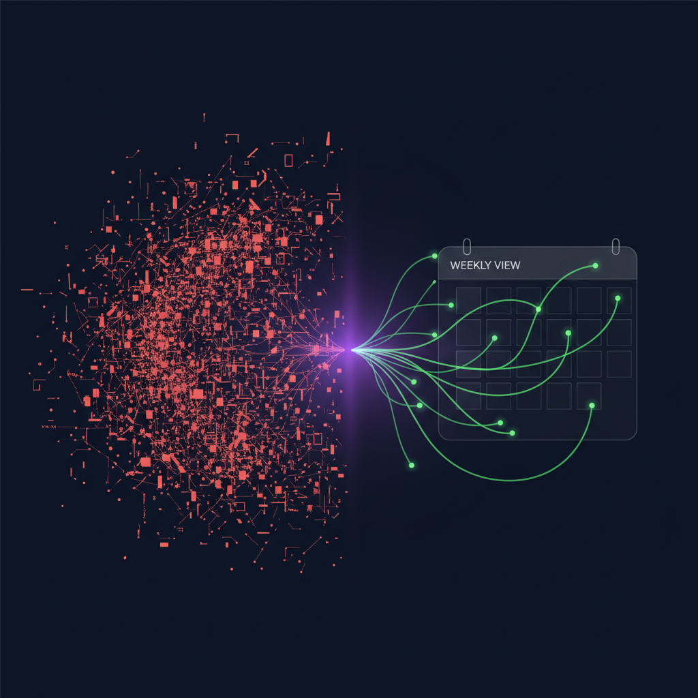

Acquiring a new customer costs 5-7x more than retaining an existing one. Yet most B2B SaaS companies still treat churn as an inevitability rather than a solvable problem. The difference between CS teams that hold the line on retention and those that watch revenue walk out the door comes down to one thing: a systematic, proactive approach to customer churn prevention. This guide breaks down the seven strategies that separate best-in-class CS organizations from the rest.
Before diving into what works, it's worth understanding why most churn prevention efforts fall flat. The pattern is remarkably consistent across mid-market B2B SaaS companies, regardless of industry or product category.
The reactive trap. Most CS teams operate in reactive mode. They find out an account is at risk when the customer tells them — through a cancellation request, a negative NPS response, or an escalation to the VP. By that point, the customer has already made their decision internally. You're not preventing churn; you're negotiating the terms of a breakup.
The data tells the story: the average B2B SaaS company identifies churn risk just 2-3 weeks before the renewal date. But the behavioral signals that predict churn — declining usage, reduced stakeholder engagement, unresolved support tickets — start appearing 60-90 days earlier. That gap between when churn becomes predictable and when it becomes visible to the CS team is where revenue goes to die.
No shared framework. Ask five CSMs on the same team how they assess account health, and you'll get five different answers. One checks login frequency. Another looks at support ticket volume. A third goes by gut feel based on their last call with the champion. Without a standardized methodology, churn prevention is inconsistent at best and completely absent at worst.
Signals spread across too many tools. The typical CS tech stack includes Salesforce for CRM data, a product analytics tool like Looker or Amplitude for usage metrics, Gong or Chorus for call sentiment, Zendesk or Intercom for support activity, and Slack or Teams for internal communication. Each tool holds a piece of the churn puzzle. No single tool holds the full picture. CSMs spend their Monday mornings pulling data from five different dashboards just to figure out which accounts need attention — time they should be spending on actual customer conversations.
"I don't need another platform to configure. I need something that tells my team what's on fire, what's growing, and what to do first — every Monday morning, without any setup."
That quote came from a VP of Customer Success at a mid-market SaaS company managing 150 accounts. It captures the core frustration: the problem isn't a lack of data. It's a lack of a system that turns data into action.
The strategies below aren't theoretical. They're drawn from the operational playbooks of CS teams that consistently maintain net revenue retention above 110%. Each one addresses a specific failure mode in the typical churn prevention process.
A health score is the foundation of any churn prevention program. Without one, every risk assessment is subjective. With one, your entire team operates from the same baseline.
An effective B2B SaaS health score combines four categories of signals:
Weight each category based on what has historically correlated with churn in your customer base. For most B2B SaaS companies, product usage and engagement carry the heaviest weight, but the right balance depends on your product and customer profile.
If you're building a health score from scratch, start with our customer health score template to get a working framework in place before you start customizing.
A health score that nobody looks at is worse than no health score at all — it creates a false sense of security. The most effective churn prevention programs are built around a weekly review cadence, not quarterly business reviews.
Here's why weekly matters: churn signals are time-sensitive. A customer whose usage dropped 30% this week needs attention this week — not at the next monthly pipeline review. The weekly cadence creates a forcing function that ensures at-risk accounts surface before they reach the point of no return.
The structure is simple:
This cadence doesn't require a 2-hour team meeting. For a team managing 100-200 accounts, the Monday review should take 20-30 minutes if the data is pre-assembled. The problem is that assembling the data typically takes longer than reviewing it — which brings us to strategy three.
The biggest time killer in churn prevention isn't the analysis — it's the data assembly. When your usage data lives in Looker, your CRM data lives in Salesforce, your call intelligence lives in Gong, and your support data lives in Zendesk, the simple act of assessing one account's health requires opening four tabs and mentally synthesizing information across all of them.
Multiply that by 150 accounts and you understand why most CS teams only review a fraction of their book each week. The accounts that get reviewed are the ones that are loudly complaining — which, by definition, means you're already in reactive mode.
The solution is a consolidated signal layer that pulls health indicators from all your tools into a single view. This doesn't have to be a massive platform implementation. The requirements are straightforward:
The goal isn't to replace your existing tools. It's to create a weekly synthesis layer on top of them that tells your team what's on fire, what's growing, and what to do first — without anyone spending an hour pulling dashboards.
Health scores, weekly cadence, and consolidated signals — all set up in 5 minutes. No implementation project. No configuration. Just connect your tools and go.
Start Your Free TrialWhen a CSM sees a red account on their Monday morning dashboard, what happens next shouldn't depend on which CSM is looking at it. Standard playbooks ensure consistent, high-quality intervention regardless of who owns the account.
Build playbooks for the most common churn risk scenarios:
Document each playbook with specific triggers, actions, timelines, and escalation paths. Then actually enforce them. A playbook that exists in a Notion doc but isn't reflected in weekly team behavior is just documentation theater.
Most CS dashboards are built around lagging indicators: churn rate, NRR, renewal rate, NPS. These metrics tell you what already happened. They're useful for board reporting but useless for preventing the next churn event.
Leading indicators are the behavioral signals that predict churn before it shows up in the revenue numbers. The most reliable ones for B2B SaaS:
Build your health score and weekly review around these leading indicators, and you'll catch risk 60-90 days earlier than teams relying on lagging metrics alone.
Churn prevention fails when it's everyone's responsibility and no one's accountability. Every at-risk account needs a clear owner, a clear action plan, and a clear deadline.
This applies at two levels:
Account level: The assigned CSM owns the relationship and the intervention plan. But ownership doesn't mean working in isolation. For high-value at-risk accounts, the CSM should have a clear escalation path to CS leadership, product, and executive sponsors. Define when and how to escalate — don't leave it to judgment calls made under pressure.
Team level: The CS leader (VP or Director) owns the overall churn prevention program. They're responsible for ensuring the weekly cadence happens, playbooks are followed, and the team has the tools and data they need. They should be reviewing the at-risk pipeline weekly — not quarterly at the board deck assembly meeting.
Accountability also means tracking follow-through. If a CSM is assigned an action on Monday, someone should be checking whether it happened by Friday. Not as micromanagement, but as a quality control mechanism for your most important operational process.
Churn prevention is not a set-it-and-forget-it program. The signals that predict churn evolve as your product, customer base, and market change. What worked last year may not work this year.
Run a monthly retrospective on your churn prevention program:
Share these metrics with the team. Churn prevention gets better when everyone can see how the system is performing and where it's falling short.
The seven strategies above work. But they also require a significant amount of manual effort to implement — particularly strategies 1 through 3 (health scoring, weekly cadence, and signal consolidation). Most CS teams know they should do these things. The reason they don't is that the operational overhead of pulling data from five tools, calculating health scores, and prioritizing accounts manually every Monday morning is unsustainable.
That's the problem Monday Morning Playbook was built to solve.
Here's how it works: you connect your existing tools via OAuth — Salesforce, Looker, Gong, Linear, Slack — in about five minutes. No data migration, no implementation project, no consultants. Monday Morning Playbook automatically pulls signals from each tool, calculates a multi-dimensional health score for every account, and delivers a prioritized weekly briefing to your team every Monday morning.
The briefing includes:
The result: your team spends Monday morning acting on customer risk instead of assembling dashboards. The strategies in this guide become operational reality instead of aspirational best practices.
You can't manage what you can't measure. Here are the KPIs that matter for a churn prevention program, along with benchmarks for mid-market B2B SaaS:
Track these monthly. Share them with your team and your leadership. A churn prevention program that produces measurable results is a churn prevention program that keeps getting funded and supported.
Customer churn prevention isn't about having better intuition or working harder. It's about having a system that surfaces risk early, gives your team the context to act, and runs consistently every single week.
The seven strategies in this guide give you the framework. Whether you implement them manually or use a tool like Monday Morning Playbook to automate the heavy lifting, the important thing is to start. Every week without a proactive churn prevention system is a week where at-risk accounts slip through the cracks.
Your customers are sending signals right now. The only question is whether your team will see them in time.
Connect your tools in 5 minutes. See which accounts need attention before your team even opens Salesforce.